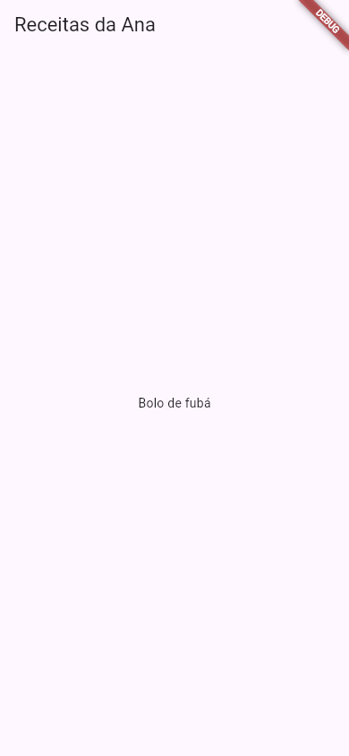

O que é Flutter
A Ana já sabe o básico de Dart: variáveis, funções, listas, classes. Agora ela quer o que todo mundo quer quando aprende a programar: um app de verdade, com botões, que abra no celular dela e no da mãe. O Flutter é a ferramenta que faz isso. Com ele, você escreve o app uma vez, em Dart, e o mesmo código vira um app de Android, de iPhone, um site e um programa de computador.
- O que é o Flutter e de onde ele veio.
- A grande ideia do Flutter: tudo na tela é um widget, uma peça de montar.
- Como o Flutter desenha a tela: com o próprio motor, pixel por pixel, em vez de usar os botões prontos do sistema.
- Em quais aparelhos o mesmo código roda.
- O que vem na caixa quando você instala o Flutter.
- A cara de um app Flutter mínimo, com cada parte explicada.
- O Flutter comparado com outros jeitos de fazer app, e o que este guia vai ensinar.
A ideia: uma caixa de peças de montar
Pense numa caixa de blocos de montar. Com peças pequenas (um tijolinho, uma janela, uma porta), você monta uma casa; com a casa, uma rua; com a rua, uma cidade. Ninguém fabrica a cidade inteira de uma vez: ela é feita de peças encaixadas umas dentro das outras.
No Flutter, cada peça da tela se chama widget (em inglês, algo como "dispositivo", "pecinha"; neste guia, "componente" ou "peça da tela"). Um texto é um widget. Um botão é um widget. O espaço em volta do botão é um widget. A tela inteira é um widget que tem outros widgets dentro. Fazer um app em Flutter é, no fundo, encaixar widgets.
| Na caixa de blocos | No Flutter |
|---|---|
| Uma peça (um tijolinho, uma janela) | Um widget: Text, Icon, ElevatedButton |
| Uma peça encaixada dentro de outra | Um widget filho (child) dentro de um widget pai |
| Várias peças lado a lado | Uma lista de filhos (children), por exemplo numa Column ou numa Row |
| A casa montada | A árvore de widgets da tela |
Essa ideia é tão central que tem uma aula só para ela: Tudo é Widget.
1. O que é, em uma frase
O Flutter é um kit de desenvolvimento (um SDK, Software Development Kit) gratuito e de código aberto, criado pelo Google, para fazer apps com interface gráfica para várias plataformas a partir de um único código escrito em Dart.
- kit de desenvolvimento (SDK)
- Não é um programa que você abre e clica: é um conjunto de ferramentas de linha de comando (o
fluttere odart), bibliotecas prontas (os widgets) e o motor que desenha a tela. Você escreve código num editor e usa os comandos para criar, rodar e empacotar o app. - gratuito e de código aberto
- Você não paga nada para usar, nem para publicar apps feitos com ele. O código do próprio Flutter fica aberto no GitHub (
github.com/flutter/flutter). - criado pelo Google
- A primeira versão estável, a 1.0, saiu em dezembro de 2018. O Google usa o Flutter em apps próprios, e milhares de empresas também.
- um único código
- O mesmo projeto vira app de Android, de iOS (iPhone e iPad), site (web), e programa de Windows, macOS e Linux.
- em Dart
- A linguagem do Flutter é o Dart, também do Google. Você não escreve Java, Kotlin ou Swift para fazer as telas: é Dart do começo ao fim. A aula O Dart que Você Precisa revisa o que vai aparecer.
2. Como o Flutter desenha a tela
Este é o detalhe que mais diferencia o Flutter. Existem, grosso modo, dois jeitos de um kit de apps mostrar um botão:
- Pedir ao sistema: o kit fala para o Android "mostre um botão seu aqui" e, para o iPhone, "mostre um botão seu aqui". Cada sistema desenha o seu botão. É o que fazem os apps nativos e, de outro jeito, o React Native.
- Desenhar sozinho: o kit recebe do sistema só uma "tela em branco" (uma área de pintura) e desenha cada pixel do botão por conta própria. É o que o Flutter faz.
O Flutter traz dentro do app um motor de desenho (em inglês, engine; nos celulares, o motor atual se chama Impeller) que pinta tudo: textos, cores, sombras, animações. Por isso um app Flutter fica igual no Android e no iPhone, e por isso ele é rápido: o motor conversa direto com a placa de vídeo do aparelho.
Seu código Dart (os widgets)
│
▼
Framework Flutter « Material, Cupertino, layout, animações (em Dart)
│
▼
Engine (motor) « desenha os pixels (em C++)
│
▼
Sistema do aparelho « Android, iOS, web, Windows, macOS, Linux
- Seu código
- As telas do seu app: widgets que você monta.
- Framework
- A biblioteca de widgets prontos que vem com o Flutter, escrita em Dart. Inclui a coleção Material (o visual do Google, hoje na versão Material 3) e a Cupertino (o visual do iPhone).
- Engine
- O motor que transforma a árvore de widgets em pixels. Você quase nunca mexe nele diretamente.
- Sistema
- Entrega ao Flutter a área de pintura, os toques na tela, o teclado, a câmera.
Como o Flutter desenha sozinho, um botão Material fica igual em todos os aparelhos. Se você quiser o visual do iPhone num iPhone, usa os widgets Cupertino. A maioria dos apps escolhe um visual só, o Material, e usa nos dois.
3. Onde o mesmo código roda
| Plataforma | O que sai | Para construir, você precisa de |
|---|---|---|
| Android | Um app (.apk ou .aab, o formato da Play Store) | Windows, macOS ou Linux, com o Android SDK |
| iOS (iPhone e iPad) | Um app para a App Store | Um Mac, com o Xcode (exigência da Apple) |
| Web | Um site (HTML, JavaScript e WebAssembly) | Qualquer sistema, com o Chrome para testar |
| Windows | Um programa .exe | Um Windows, com o Visual Studio |
| macOS | Um programa de Mac | Um Mac, com o Xcode |
| Linux | Um programa de Linux | Um Linux, com algumas bibliotecas de desenvolvimento |
Repare na última coluna: o código é um só, mas cada sistema exige as próprias ferramentas para empacotar o app. Um app de iPhone, por exemplo, só se empacota num Mac. O comando que confere o que está faltando na sua máquina é o flutter doctor.
Este guia ensina pensando primeiro em Android (o celular mais comum no Brasil), e as fotos das telas mostram o app no tamanho de um celular. As aulas de build mostram as outras plataformas.
4. A cara de um app Flutter
Chega de conversa: este é um app Flutter completo. Ele mostra uma tela com uma barra de título e uma frase no meio.
import 'package:flutter/material.dart';
void main() {
runApp(const MeuApp());
}
class MeuApp extends StatelessWidget {
const MeuApp({super.key});
@override
Widget build(BuildContext context) {
return MaterialApp(
home: Scaffold(
appBar: AppBar(title: const Text('Receitas da Ana')),
body: const Center(
child: Text('Bolo de cenoura'),
),
),
);
}
}
Repare em três coisas na tela. O título ficou no alto, na barra (AppBar); a frase ficou exatamente no meio (Center); e as cores (o fundo claro, a letra escura) vieram sozinhas, do tema padrão do Material 3. A faixa vermelha DEBUG no canto avisa que o app está no modo de desenvolvimento, o modo do flutter run; ela some no app final (aula Rodando o App (flutter run)).
Você ainda não precisa entender cada linha (cada uma tem aula própria), mas já dá para reconhecer as peças:
- import 'package:flutter/material.dart';
- Traz para o arquivo todos os widgets do Material:
MaterialApp,Scaffold,AppBar,Text,Center. Quase todo arquivo de tela começa com essa linha. - void main() { runApp(...); }
- O
mainé o mesmo do Dart: onde o programa começa. A diferença é orunApp, que pega um widget e o coloca na tela inteira. Aula Seu Primeiro App (runApp). - class MeuApp extends StatelessWidget
- O seu app é uma classe de Dart que "é um" widget.
StatelessWidgeté o widget que não muda sozinho (sem estado). Aula StatelessWidget. - Widget build(BuildContext context)
- O método que o Flutter chama para saber o que desenhar. Ele devolve a árvore de widgets.
- MaterialApp → Scaffold → AppBar / Center → Text
- As peças encaixadas: o app Material, o "andaime" da tela (
Scaffold), a barra de cima com o título e, no corpo, umCenterque centraliza umText. - const
- Avisa ao Dart que aquela peça nunca muda. O Flutter aproveita isso para não reconstruir o que já está pronto. Você vai ver
constem todo canto.
Desenhada como árvore, a tela fica assim:
MaterialApp
└── Scaffold
├── appBar: AppBar
│ └── title: Text('Receitas da Ana')
└── body: Center
└── child: Text('Bolo de cenoura')
Missão: a Ana mudou de ideia sobre a receita do dia. Troque Bolo de cenoura por Bolo de fubá e clique em Rodar.
import 'package:flutter/material.dart';
void main() {
runApp(const MeuApp());
}
class MeuApp extends StatelessWidget {
const MeuApp({super.key});
@override
Widget build(BuildContext context) {
return MaterialApp(
home: Scaffold(
appBar: AppBar(title: const Text('Receitas da Ana')),
body: const Center(
child: Text('Bolo de cenoura'),
),
),
);
}
}
import 'package:flutter/material.dart';
void main() {
runApp(const MeuApp());
}
class MeuApp extends StatelessWidget {
const MeuApp({super.key});
@override
Widget build(BuildContext context) {
return MaterialApp(
home: Scaffold(
appBar: AppBar(title: const Text('Receitas da Ana')),
body: const Center(
child: Text('Bolo de fubá'),
),
),
);
}
}

5. O que vem na caixa
Quando você instala o Flutter (aula Instalar o Flutter), recebe uma pasta com tudo isto:
| Peça | Para que serve |
|---|---|
O comando flutter | Cria projetos (flutter create), roda o app (flutter run), confere a instalação (flutter doctor), baixa pacotes (flutter pub get), empacota (flutter build) |
| O Dart SDK | A linguagem, o comando dart e o analisador de código. Vem junto: não precisa instalar o Dart separado |
| O framework | Os widgets prontos: Material 3, Cupertino, layout, animação, gestos |
| O engine | O motor de desenho, já compilado para cada plataforma |
| O DevTools | Ferramentas de depuração no navegador: inspecionar a árvore de widgets, ver desempenho e memória |
| O hot reload | Troca o código do app enquanto ele está aberto, em menos de um segundo, sem perder o que estava na tela. Aula Hot Reload e Hot Restart |
Fora do Flutter, você ainda vai precisar de um editor (aula VS Code e Android Studio) e, para Android, do Android SDK, que vem com o Android Studio.
Formas diferentes de fazer um app (e quando usar o Flutter)
| Jeito | Linguagem | Como desenha | Bom quando |
|---|---|---|---|
| Flutter | Dart | Motor próprio, igual em todo aparelho | Você quer um código só para Android e iOS (e talvez web e desktop), com visual próprio e animações suaves |
| Nativo Android | Kotlin (Jetpack Compose) | Componentes do Android | O app é só para Android e usa muito recurso específico do sistema |
| Nativo iOS | Swift (SwiftUI) | Componentes do iOS | O app é só para iPhone |
| React Native | JavaScript / TypeScript | Pede ao sistema os componentes nativos | A equipe já sabe React e JavaScript |
| Site responsivo | HTML, CSS, JavaScript | O navegador | Não precisa estar na loja de apps nem funcionar sem internet |
Curiosamente, o Jetpack Compose e o SwiftUI, os jeitos modernos de fazer app nativo, usam a mesma ideia do Flutter: a tela é descrita como uma árvore de componentes. O que você aprender aqui ajuda até se um dia mudar de ferramenta.
Para quem já sabe Dart e quer o mesmo app no celular Android e no iPhone, o Flutter é a escolha mais direta: uma linguagem, um código, um visual. Os nativos ganham quando o app é de uma plataforma só ou depende de algo muito específico do sistema.
Quando dá errado
Ainda não instalamos nada, mas vale conhecer desde já as três "caras" de um problema no Flutter, porque você vai encontrar todas neste guia:
Um erro de escrita (um parêntese a mais, um nome errado) faz o Dart recusar o programa antes de rodar. O flutter run mostra a mensagem com o arquivo, a linha e a coluna, no formato lib/main.dart:15:9: Error: ..., e o app nem abre. Você vê exemplos reais em Rodando o App (flutter run).
Se algo dá errado enquanto o Flutter monta a tela, ele troca o pedaço com problema por uma tela vermelha com a mensagem de erro em amarelo (no modo de desenvolvimento) e escreve a explicação completa no terminal. Aula Tudo é Widget.
É o famoso erro de overflow (transbordamento): um widget ficou maior que o espaço disponível. O Flutter pinta a faixa que "vazou" com listras e diz no terminal quantos pixels sobraram. Tem aula só dele: O Famoso Erro de Overflow.
Nos três casos, a regra é a mesma do Dart: leia a mensagem do terminal. Ela sai em inglês; o guia traduz e explica cada uma.
O que este guia ensina
| Nível | Você vai aprender |
|---|---|
| 1 · Iniciante | Instalar, criar e rodar um projeto; os widgets básicos (Text, Icon, Image, botões); layout (Row, Column, Container, Stack) |
| 2 · Intermediário | Estado (StatefulWidget, setState), listas, formulários, navegação entre telas |
| 3 · Avançado | Gerência de estado em apps grandes, internet, banco de dados, testes, publicação |
Todas as telas e saídas do guia foram tiradas de um Flutter de verdade, na máquina fictícia da Ana (usuária ana, computador notebook). As caixas "Experimente" deixam você mexer no código direto na página; ao clicar em Rodar, o app é compilado pelo DartPad, do Google, e aparece logo abaixo (precisa de internet; aula O Editor do Guia).
Referência rápida
| Termo | O que é |
|---|---|
| Flutter | O kit (SDK) do Google para fazer apps de várias plataformas com um código só |
| Dart | A linguagem em que se escreve o app Flutter |
| Widget | Uma peça da tela: texto, botão, espaço, a tela inteira |
| Árvore de widgets | Os widgets encaixados uns dentro dos outros, formando a tela |
| Framework | A biblioteca de widgets prontos (Material, Cupertino) |
| Engine (Impeller) | O motor que desenha os pixels |
| Material 3 | O visual padrão dos widgets do Flutter, criado pelo Google |
runApp | A função que coloca o primeiro widget na tela |
| Hot reload | Recarga a quente: troca o código com o app aberto, sem perder o estado |
Exercícios
1. A linguagem
Em que linguagem se escrevem as telas de um app Flutter?
2. A função que abre o app
Complete a linha que coloca o widget MeuApp na tela:
3. Como o Flutter mostra um botão na tela?
4. A Ana tem um notebook com Windows. Qual destes apps ela não consegue empacotar nele?
5. No app desta aula, quem é o filho (child) do Center?
Missão final: o título do app
Missão: transforme o app de receitas no cardápio da lanchonete: o título da barra deve ser Lanches da Ana e a frase do meio, Pão de queijo.
import 'package:flutter/material.dart';
void main() {
runApp(const MeuApp());
}
class MeuApp extends StatelessWidget {
const MeuApp({super.key});
@override
Widget build(BuildContext context) {
return MaterialApp(
home: Scaffold(
appBar: AppBar(title: const Text('Receitas da Ana')),
body: const Center(
child: Text('Bolo de cenoura'),
),
),
);
}
}
import 'package:flutter/material.dart';
void main() {
runApp(const MeuApp());
}
class MeuApp extends StatelessWidget {
const MeuApp({super.key});
@override
Widget build(BuildContext context) {
return MaterialApp(
home: Scaffold(
appBar: AppBar(title: const Text('Lanches da Ana')),
body: const Center(
child: Text('Pão de queijo'),
),
),
);
}
}
Resumo
- O Flutter é o kit gratuito do Google para fazer apps de Android, iOS, web, Windows, macOS e Linux com um código só, em Dart.
- Tudo na tela é um widget, uma peça de montar; os widgets se encaixam uns nos outros e formam a árvore de widgets.
- O Flutter não usa os botões do sistema: o motor dele (Impeller) desenha cada pixel, e por isso o app fica igual em todo aparelho.
- O código é um só, mas cada plataforma pede as próprias ferramentas para empacotar (app de iPhone, só num Mac).
- Um app mínimo tem o
importdo Material, ummaincomrunAppe uma classe de widget com o métodobuild. - Quando dá errado, o Flutter avisa de três jeitos: erro de compilação no terminal, tela vermelha e listras de overflow. Leia sempre a mensagem do terminal.